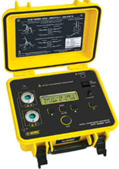

T.T.R - AEMC 8510 de DTR (Medidor de relacion de transformacion)
El modelo 8510 de DTR ® es un medidor de relación de espiras de transformador digital portátil y fácil de usar, diseñado para pruebas in situ de transformadores de potencia, potencial y corriente. Cuando se conecta a un transformador no energizado, el modelo 8510 de DTR ® mide con precisión la relación de espiras del primario al secundario, al mismo tiempo que muestra la polaridad y la corriente de excitación.
El DTR ® es totalmente automático y utiliza un método de prueba compatible con ANSI/IEEE. No se requiere calibración por parte del usuario, selección de rango, manivela o balanceo tedioso. En cada medición, el DTR® se autocalibra automáticamente y verifica si hay devanados/conexiones/disyuntores abiertos, cortocircuitos (exceso de corriente de excitación), colocación incorrecta de los cables de prueba y polaridad inversa. Las medidas se muestran de forma rápida y precisa.
La prueba de la relación de vueltas sirve para confirmar la relación de transformación, polaridad de transformadores nuevos, reparados o en servicio. La desviación en las lecturas de la relación de vueltas, indican problemas en uno o en ambos bobinados o en el circuito magnético del núcleo. La corriente de Excitación, los estándares requieren que la medición de la corriente de excitación sea realizada con el voltaje de operación y bajo condiciones de no carga.
La tolerancia para la relación de transformación debe ser de ± 0.5% en todas sus derivaciones de los datos de placa.
Las pruebas con el TTR nos ayudan a identificar:
01.- Fallas internas en el valor de la relación de vueltas de los cambiadores Taps del transformador.
02.- Relación de transformación.
03.- Circuitos abiertos.
04.- Corriente de excitación.
05.- Problemas en los bobinados y en el núcleo.
06.- Desviación en la relación de vueltas, problemas en bobinados.
07.- Espiras en cortocircuito.
08.- Polaridad.
09.- Conexiones incorrectas.
10.- Relación de Angulo primario Vs. Secundario.